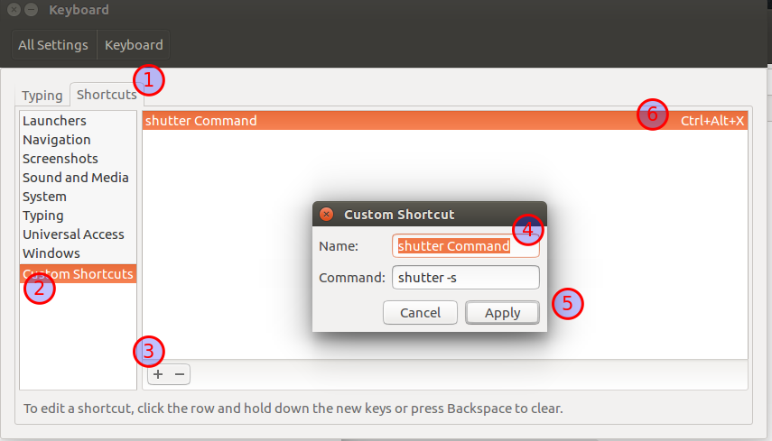

peek
peek 用于录屏成gif/MP4 进行展示, github地址 （虽然linux版本一直停留在0.75，但完全够我用）
简单安装:
sudo add-apt-repository ppa:peek-developers/stable
sudo apt update && sudo apt install peek
原始安装:
sudo apt-get update
wget https://github.com/phw/peek/releases/download/v0.8.0/peek-0.8.0-Linux.deb
sudo apt install libsdl1.2debian ffmpeg libavdevice-ffmpeg56
sudo dpkg -i peek-0.8.0-Linux.deb
sudo apt-get -f install
shutter
shutter 用于截图编辑加序号（标注功能很赞，但就是启动有些耗时QAQ）
sudo apt-get install shutter
配置截图快捷键:
system settings --> Keyboard --> Shortcuts ---> Custom Shortcuts

autojump
快速的文件导航小工具，基本上 1 秒打开我想找的任何文件
安装
// 安装
sudo apt install autojump
// 配置 bash
vim ~/.bashrc
. /usr/share/autojump/autojump.sh
// 查看更详细的信息
cat /usr/share/doc/autojump/README.Debian
常用命令
// 查看目录权重
j -s
// 使用文件管理器打开
jco 目录
// 定期从 atuojump 中清除已删除的mulv
j --purge
uGet - 下载
uGet 是一款 Linux 下支持多点下载和断线续传的下载工具。
sudo apt update
sudo apt install aria2 uget
安装完成以后在 uGet 的设置选项中的Plugin面板开启aria2支持，这样能够在以后下载时使用多点下载功能。
KeePass2
KeePass2 和 1Password 我两个都在用，用来存储安全系数比较低的密码，1Password 在浏览器中用着更方便（时时清cookie）
PS：财务相关，个人身份信息相关的重要账号坚决不使用密码管理器，我很相信加密算法的安全性，但信息泄露最薄弱的环节是人，
所有密码都用密码管理器托管，一旦泄露，就不是简单的裸奔了，简直是裸奔到手术台上等着别人解剖了，而且自己还不一定知道解剖是什么时候就已经开始的～
密码管理器只用于托管不太重要的密码，重要密码，心算也是一个不错的办法。